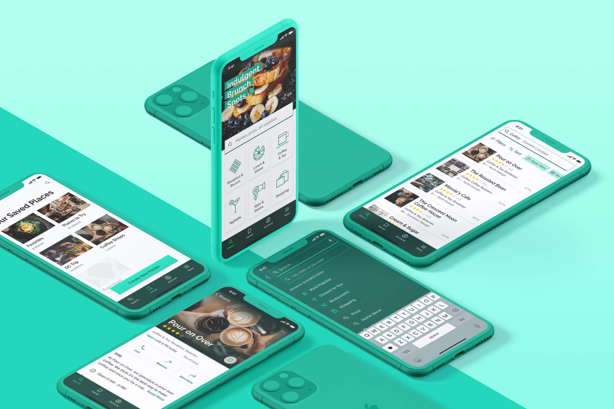

Hidden Gems: Crafting a Native Mobile App to Discover Local Businesses
Hidden Gems is a conceptual mobile app that I created for a course project. The idea was to create a Yelp-esque directory platform aimed at helping people discover the incredible local spots in their area. Shopping local benefits the entire community, but it's not always easy to find small businesses; that's the gap I wanted to bridge.
This project was my first foray into Google's Material Design guidelines and Apple's Human Interface Design guidelines. My goal was to execute my concept while working within each platform's guidelines.
My Role
UI/UX Designer & Researcher
Timeline
January - March 2021
Table of Contents
Process
Research & Ideation
Market & UI Research
Before diving in to creating my app, I did research into existing apps for finding local businesses. Though there are a few apps that offer users a way to find local businesses, I couldn't find any that did exactly what I saw my app doing that have gained much traction in the market. View my analysis of existing apps PDF.
Separately, I did some UI research and analysis to observe the patterns and functionality in successful directory apps. I analyzed two main apps: Yelp and FourSquare. My intention for Hidden Gems is that it would function very similarly to these apps, so I got a lot of valuable information from analyzing them. View my UI research analysis PDF.

Ideation
I created a project proposal in which I defined my projected users, listed the essential features and user stories, and created user flows and a user flow diagram. I've included a couple of key user flows below; view the project proposal PDF to see more.

From Rough Sketches to Wireframes
Sketches
I extracted the list of screens I needed to create from my user flows, and then started sketching some low-fidelity concepts.

Low to High Fidelity Wireframes
I created low-fidelity wireframes from my sketches and iterated from there. I added detail as I moved the screens into the mid-fidelity stage, and then I used them to create a prototype. I requested feedback on the prototype and made improvements based on the input I received. It took several more rounds of polishing and tweaking before I had the final screens.

Finalizing the Designs
Defining the Visual Language
Building on the idea of an opulent gem, the visual style for Hidden Gems is angular and sleek with a minimal color scheme. The mix of bright, almost neon, turquoise with mid-range teals and deep emerald greens communicates luxury without being unapproachable. For the icon set, I used Material Design icons as a base and customized them to have thinner strokes and sharper edges.

Final Screen Designs
I created about 30 screens for each operating system. Though not always immediately obvious, there are meaningful differences between the screens for iOS and Android. This required me to essentially design the app twice, which was a great exercise in patience! The screens can be broken into several main categories based on function and content:
Onboarding: These screens give users a brief introduction to the app, plus an opportunity to turn on location services and create an account if they want.
Search: Since searching is the primary function of the app, the home screen doubles as the search screen. There are multiple places a user can tap to create a search - the search bar, the category cards underneath, or the image and search suggestion at the top.
Business listing: The business listing screen displays photos, reviews, and basic information about the business. Users can save the listing to an existing folder or create a new folder by tapping the bookmark icon or the floating action button (Android only).
Saved Places: Users can save places to folders so they can find them easily later. The app comes with two default folders: Favorites and Places to Try. Users can create custom folders here as well.
Account: Since users don't need to sign up to use the app, there is a version of the account screen for guest users and a version for logged-in users. The guest version gently encourages users to create an account.
I also created several empty state screens for when a search returns no results, and for when a folder has no saved places yet. View all iOS & Android screens. (opens in new tab)

Reflections
Designing my first native app was an exciting challenge. My primary goal was to honor each OS's guidelines while still bringing my creative vision to life. I accomplished this through experimentation, multiple rounds of feedback and iteration, and thoughtfully pushing design boundaries within each platform's guidelines.
View the Visual Case Study on Behance